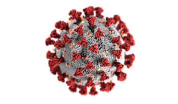

Visiting migration in time, space and crises
Introduction
Research questions
How did the COVID‑19 pandemic reshape Visiting migration?
Research questions
How did the COVID‑19 pandemic reshape Visiting migration?
Research questions
How did the COVID‑19 pandemic reshape Visiting migration?
How did the COVID‑19 pandemic reshape transnational migration?
Research questions
How did the COVID‑19 pandemic reshape Visiting migration?
How did the COVID‑19 pandemic reshape transnational migration?
How did the COVID‑19 pandemic reshape home visiting?
Definition:
Visiting migration: visiting the country of origin.
Multiple migration: repeated, secondary, onward, stepwise and serial migration (Zufferey 2019)
Transnationalism: becoming firmly rooted in their new country but maintaining simultaneously multiple linkages to their homeland (Crettaz and Dahinden 2019).
Example: Visiting migration (visiting)

Example: Visiting migration (visiting)

Example: Visiting migration (visiting)

Example: Visiting migration (visiting)


What is the expected impact?
Impact of Covid-19 travel restriction
Exceptions based on previous ties (Piccoli and Jacob-Owens 2025)
H: Center-Periphery
Impact of Covid-19 travel restriction
Impact of Covid-19 travel restriction
Cross-border mobility virtually impossible (Järv et al. 2021)
- After border reopeing: Increase of transnational ties with the country of origin
Reduced life satisfaction among migrants (Gerber and Ravazzini 2022)
- But transnational ties reduced this effect
Impact of Covid-19 travel restriction
Cross-border mobility virtually impossible (Järv et al. 2021)
- After border reopeing: Increase of transnational ties with the country of origin
Reduced life satisfaction among migrants (Gerber and Ravazzini 2022)
- But transnational ties reduced this effect
Expected: overall decrease in Visiting migration.
Impact of Covid-19 travel restriction
Cross-border mobility virtually impossible (Järv et al. 2021)
- After border reopeing: Increase of transnational ties with the country of origin
Reduced life satisfaction among migrants (Gerber and Ravazzini 2022)
- But transnational ties reduced this effect
Expected: overall decrease in transnational mobility.
But transnationality mitigate this effect
Did the COVID-19 reduce Visiting migration in Switzerland?
Switzerland

Switzerland

Visit to country of origin (DV)

Literature Review
Migration vs mobility
Previously
Migration: Unique long-term move
Mobility: Multiple short-term move
Migration vs mobility
Previously
Migration: Unique long-term move
- Undesirable
Mobility: Multiple short-term move
- Acceptable
Migration vs mobility
Today
Questioning this distinction:
- migration mobility nexus, anchoring, embedding, etc.
Relation blurred
Migration vs mobility
Today
Migration Mobility Nexus: Relationship between migration and mobility as:
Enablement: One enable the other
Continuum: There is a continuity between them
Hierarchy: One is deemed superior or preferable than the other
Opposition: One oppose the other
Migration vs mobility
Continuum: The first migration is embedded in the circular mobility between the host country and the country of origin.
Transnationalism: Ties are maintained
- Network: Family & Friends
- Attachment
- Belonging
Visiting migration ↔︎ Transnationalism in Switzerland
Linking mobility patterns to transnational ties

Core Concepts
- Transnationalism: Simultaneous participation in:
- Transnational mobility
- Transnational social networks
- Transnational attachment
- Transnational mobility
Findings
Contradict the idea that the longer individual stay the less transnational
Transnationality is ressource-dependant: legal capital (EU passport), education capital (Highly skilled)
Reactive transnationalism (triggered by marginalization and discrimination), does not hold for mobility.
Five ideal types of transmigrant
Immobile, one‑time migrants – low moves, high attachment (Southern EU, women).
Former very‑mobile men, now settled – high pre‑moves, low current mobility, low attachment (EU/US, high education).
One‑time migrants now mobile & attached – low pre‑moves, partner/children abroad, high attachment (women, Asia/LatAm).
Cosmopolitan, hyper‑mobile, low attachment – many moves, friends abroad, low attachment (US/UK, high education).
Hyper‑mobile outsiders – many moves, low attachment, low education (Western Balkans, low legal capital).
Why Visiting migration Matters
- Pre‑migration mobility
- 54 % moved once‑twice
- 37 % moved 3‑5 times
- 7 % moved > 5 times before arriving in Switzerland.
- 54 % moved once‑twice
- Post‑migration mobility
- 65 % visit origin ≥ once / year
- 18 % visit monthly or more.
- 65 % visit origin ≥ once / year
- Shows generalized mobility beyond the “high‑skill‑expat” narrative.
Key points
Visiting migration is a continuum
Recently arrived migrants are highly mobile
Need for a proper measure of transnationalism
How did the COVID‑19 pandemic reshape Visiting migration?
Hypothesis
H1: Covid-19 leads to a decrease in Visiting migration
H2: Expecting an increase in Visiting migration in 2024
H3: A higher transnationality increase Visiting migration
Methodology
DV: How often have you visited your country of origin?
IVs:
- COVID-19: years
- transnational types (social & attachment)?
- Socio-demographics
- Controls
Data
Migration Mobility Survey
Panel with refresh sample
Five waves: 2016, 2018, 2020, 2022 and 2024
Mean size: ~7’000 individuals
Sample: With the years 2018, 2020 and 2022
2’117 individuals
Risk of further decrease if 2024 wave included
Model
Mulilevel bayesian ordinal regression
- Multilevel: Longitudinal data
- Bayesian: Risk of small dataset
- Ordinal: Dependent variable
Questions
Questions
Is the presentation understandable?
Which term should I use? (Visiting migration, transnational migration, home visiting)
Do the hypothesis make sens?
Does the chosen model make sens?
Any advice?
Questions
Is the presentation understandable?
Which term should I use? (Visiting migration, transnational migration, home visiting)
Do the hypothesis make sens?
Does the chosen model make sens?
Any advice?
Thank you for your attention!